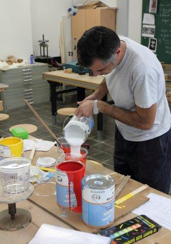
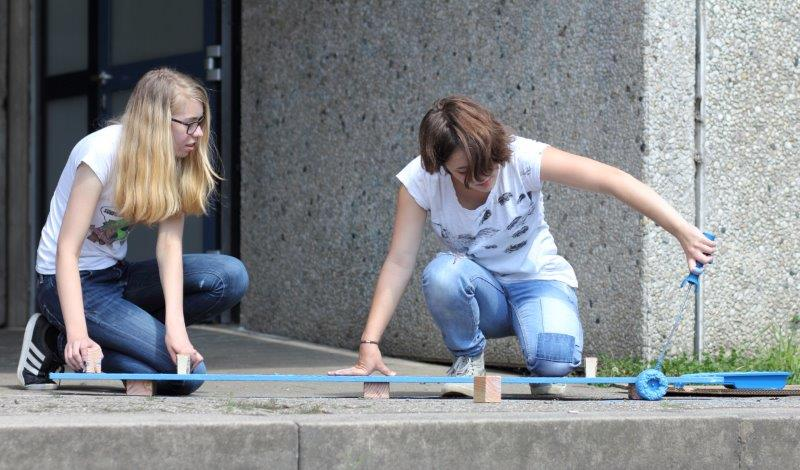
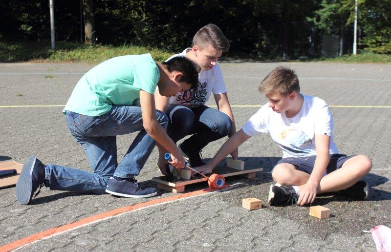
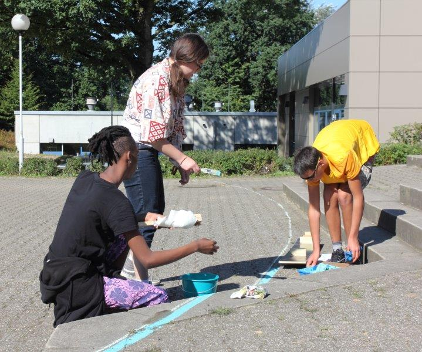
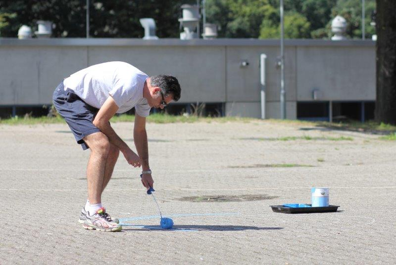
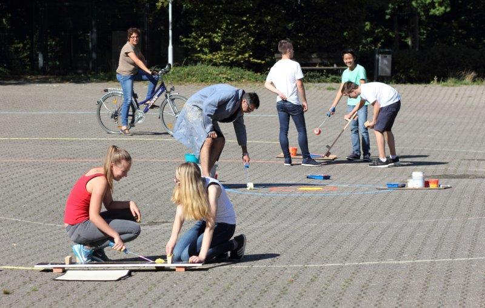
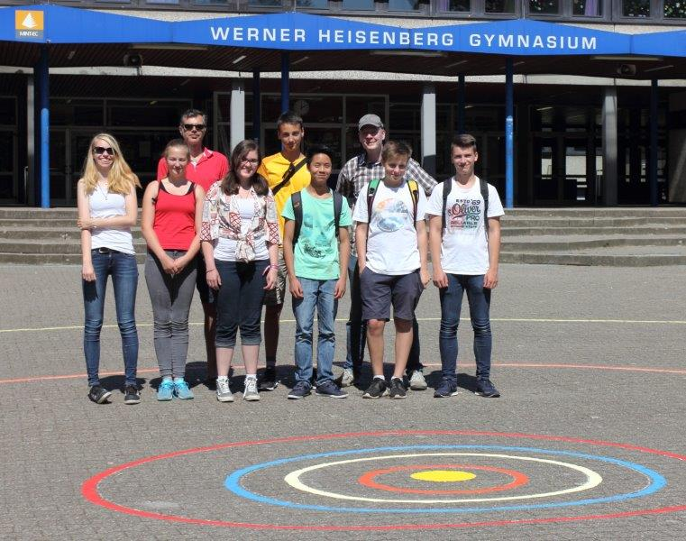
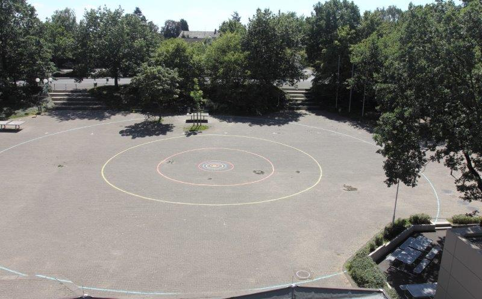
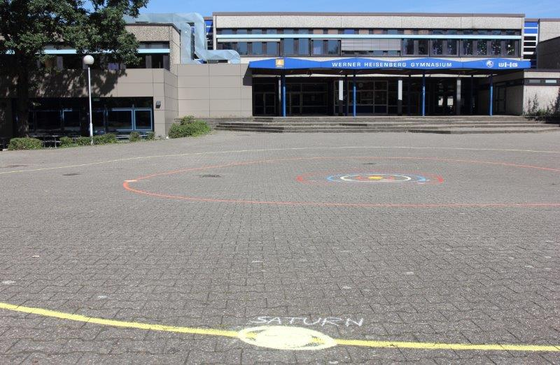
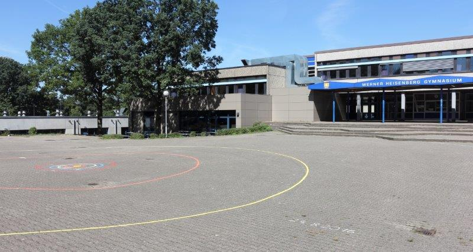

(alle Personen werden immer von links nach rechts genannt)
 IMG_1149a: Die Farben werden gemischt (Hr. Sammarro)
 IMG_1169a: Anna Wehr (Q1) und Esther Weichold (EF) zeichnen mit der Schablone die Neptunbahn
 IMG_1217a: Quy Yau Tsan, Leon Fiß und Mick Assbrock (alle EF) zeichnen die Jupiterbahn
 IMG_1210a: Bruno Tunganirwa, Anna Janßen und Johannes Kohlhaas (alle EF) an einer schwierigen Stelle der Uranusbahn
 IMG_1174a: Herr Sammarro zeichnet die Erdbahn
 IMG_1261a: Elisa Middendorf (8a), Zuschauerin auf dem Fahrrad, Anna Wehr, Herr Sammarro, Leon Fiß, Quy Yau Tsan, Mick Assbrock
 IMG_1268a: Das Planetensystem-Zeichenteam vor dem WHG (vordere Reihe: Anna Wehr, Elisa Middendorf, Anna Janßen, Quy Yau Tsan, Mick Assbrock, Leon Fiß; hintere Reihe: Herr Sammarro, Johannes Kohlhaas, Herr Hill)
 IMG_1275a: Das Planetensystem vom Dach des Schulgebäudes aus gesehen

 IMG_1283a und 1289a: Zwei weitere Ansichten des Planetensystems vom Schulhof aus gesehen